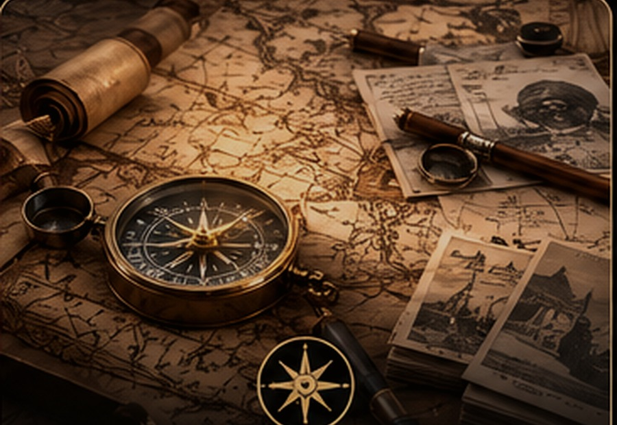
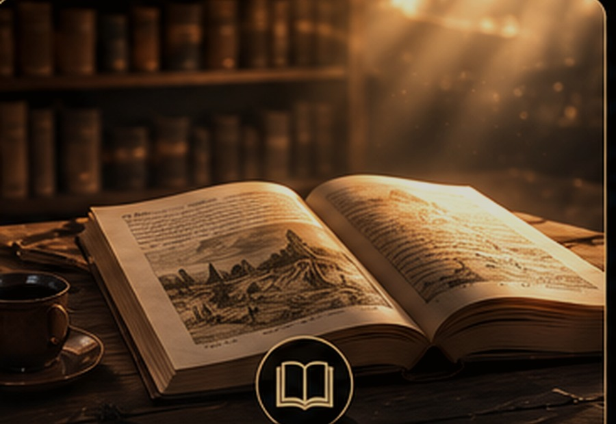
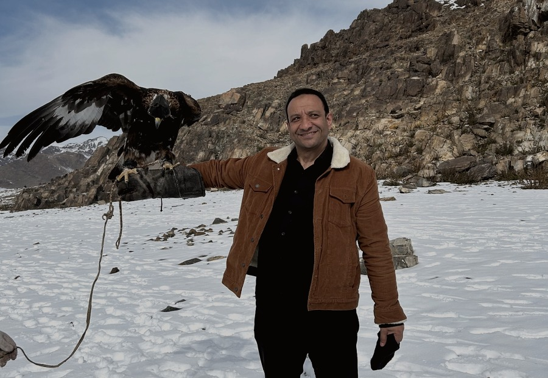
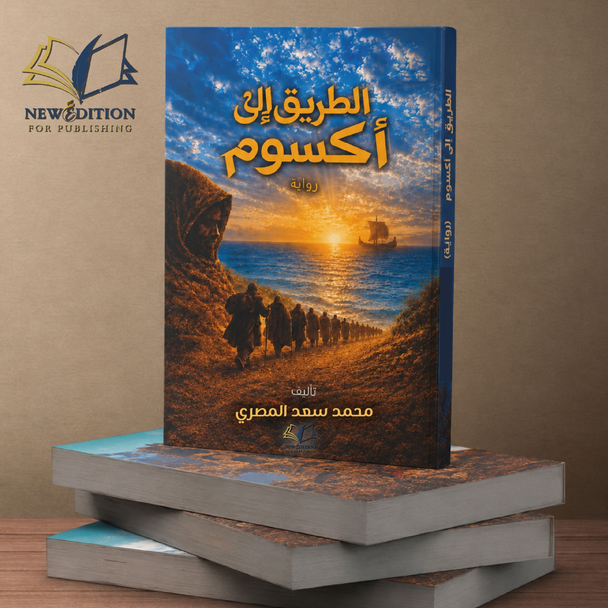

أربع نوافذ إلى عالم الكتابة
ما وراء الحكاية

من الدهشة إلى الرواية
كيف تتحول اللحظة التي تهزني إلى فكرة، ثم إلى بحث طويل، ثم إلى حكاية.
اقرأ المزيد ←

أبحث عن الإنسان بين صفحات التاريخ

البداية
الرحلة الأولى
الطريق إلى أكسوم
لماذا نعرف أسماء الملوك...
ونجهل أسماء الذين عاشوا قصصهم؟
ونجهل أسماء الذين عاشوا قصصهم؟
كيف غيّر مصيرُ طفل حياةَ مملكةٍ بأكملها؟
ما الذي لم تخبرنا به كتب السيرة عن المسلمين في الحبشة؟
أيُّ رحلةٍ بدأت هربًا وانتهت بصناعة التاريخ؟